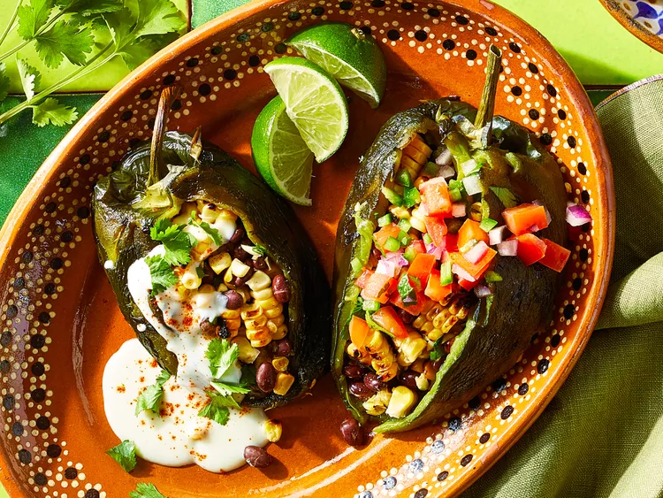

Frilled Stuffed Poblanos

Description
Fire up dinnertime with these grilled vegetarian stuffed poblano peppers that benefit from charred, smoky flavors. Invite vegans and omnivores to the cookout, too—this recipe can flex to feed everyone.
Ingredients
- 8 poblano peppers
- 5 ears corn, husks and silks removed
- 1 (15-ounce can) no-salt-added black beans, drained and rinsed
- 1/4 cup chopped fresh cilantro
- 1 tablespoon chopped fresh oregano
- 2 cloves garlic, minced
- 1 teaspoon ground cumin
- 1/4 teaspoon black pepper
- 2 teaspoons butter
- 2 teaspoon flour
- 1 cup milk
- 1 cup shredded pepper jack cheese
- 1 cup pico de gallo
- cilantro leaves, lime wedges, and/or radish slices, for serving(optional>
- chili powder, for garnish
Steps
- repare an outdoor grill for indirect grilling, lighting burners on just one side or pushing lit coals to one side.
Preheat to medium-high heat (375 to 400 degrees F (180 to 200 degrees C)). Lightly oil grill grates over lit side.
- Grill poblanos and corn, covered, turning occasionally, until poblano
skins and corn are charred, about 10 minutes. Keep grill lit.
-
Transfer poblanos to a large bowl, cover, and let stand for 10 minutes. Meanwhile, let corn stand until cool enough to handle; cut kernels from cobs.
- Remove and discard poblano skins, keeping stems intact. Make a lengthwise slit down one side of each poblano, starting at stem and being careful not to cut through to other side. Remove and discard
seeds and membranes.
-
Stir together beans, corn kernels, cilantro, oregano, garlic, salt, cumin, and black pepper in a large bowl. Spoon about 1/2 cup bean mixture into each pepper, enclosing pepper around the filling.
-
For the cheese sauce, melt butter in a small saucepan over medium-low heat; whisk in flour. Cook, stirring until lightly browned, 1 to 2 minutes. Whisk in milk; simmer, stirring, until slightly thickened, 2 to 3 minutes. Gradually whisk in cheese until melted. Remove from heat and keep warm, stirring occasionally.
-
Lightly oil grill grate over unlit side of grill. Grill stuffed poblanos, covered, until filling is heated through, 5 to 7 minutes.
-
Serve immediately with cheese sauce; pico de gallo; and (if using) cilantro, lime wedges, and/or radishes. Garnish with chili powder.